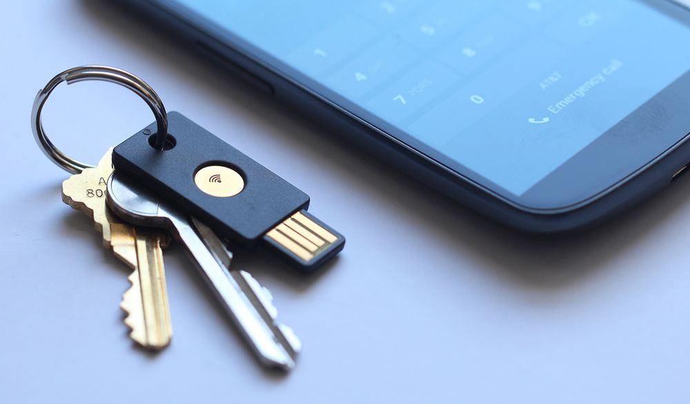
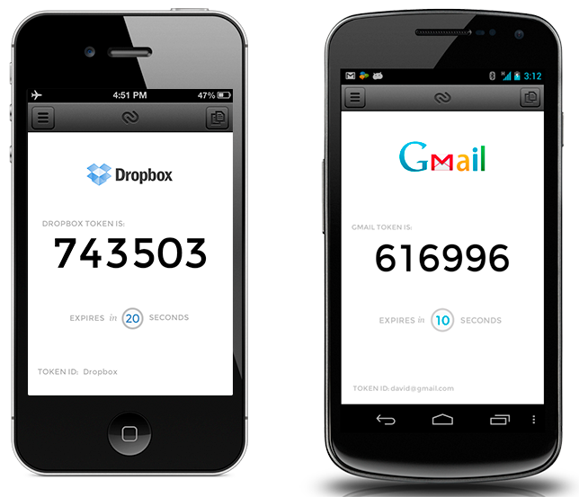

Securing your digital world
Everything requires a password. A long time ago it bugged me that I couldn’t think of something secure so I visited a web page that randomly generated passwords for you and I used the same 8 character password ever since, it contained 1 number and 7 letters one of which was uppercase. What if one of your favourite services gets hacked? What if someone hacks Linkedin and leaks 6 million user passwords? Perhaps one day your favourite dating website might get hacked? These leaks give some interesting insights to people’s passwords, of the 1,215,846 passwords that were analysed in the recent eHarmony password dump 99.5% of them didn’t contain a special character.
I think it’s safe (or not) to assume that if you’re giving your password to somebody else to store and they don’t openly publish how they’re storing your password then it’s entirely possible it will get leaked for the world to use and abuse, so in that case we need to start setting completely different passwords for each website, but that’s going to be impossible to manage right?. This is where password managers are handy, one database holding all your passwords for all your sites encrypted with a master key. There are plenty of password managers out there all of which I wouldn’t have a problem storing my passwords with, ensuring your passwords are protected is what these guys do and the cloud based products are very attractive. I’m probably a bit old school but I opted for a KeePass database stored in my Dropbox that is protected using two-factor authentication to which the one time passwords required to access my Dropbox can only be generated using my YubiKey.
So what is YubiKey and how can can two-factor authentication help me?
YubiKey it’s basically a USB device that any computer (laptop, PS3, iPad etc) will recognise a hardware keyboard. It has a contact/button on the top that allows you to generate one-time passwords, OATH-HOTP, challenge-response and 32 character static passwords. YubiKey has memory for multiple configuration profiles and allows you to program your key with up to two different profiles, press the contact between 0.3 and 1.5 seconds and you’ll get a code from profile 1, press the contact for 2-5 seconds and you’ll get a code from profile 2. My YubiKey is setup as follows: Configuration profile 1 = Static password, Configuration profile 2 = Yubico Cloud OTP.
Yubikey
One time passwords are 44 characters in length, by nature change each time they’re generated and the best bit is that once a OTP is used once it cannot be used again. Here’s an example of where this could help: You visit your favourite website whilst on holiday and unknowingly the internet cafe PC you’re using has a keylogger installed. You login, eBay asks for your username, password and a OTP generated from your YubiKey. That OTP is then checked against YubiCloud or time-based one-time algorithm you setup earlier and you’re authenticated. The hacker then tries to use those same details but they can’t get in! The YubiKey OTP they recorded is now worthless because it’s already been used. YubiCloud is completely open source and you can even run your own authentication servers. Developers can integrate their applications with YubiCloud using documented APIs for free. Unfortunately not all services support YubiCloud yet, such as Google, however there is talk that Google is trialing it internally. More and more of the web is starting to support two-factor authentication. Google and Dropbox today both support two-factor authentication in the form of time-based one-time passwords. This is basically a one-time password that stays the same for an amount of time and then changes after that time, for Google and Dropbox this time is 30 seconds. Both companies offer time-based one-time passwords via text message or phone call, they text you a 6-digit code to use alongside your username and password. Google will offer to call you if you can’t receive the text message (whenever that would be?!) and read out the 6-digit code to you, unfortunately some clever chap figured out a way to redirect voicemail to a VoIP service, CEO and Co-founder of CloudFlare Matthew Prince was victim to an attack like this and what’s to say your network provider won’t suffer the same social engineering hack. Anyone can spoof a phone number and many voicemail systems will grant access to your mailbox if it thinks you’re calling from your own number, enter the default pin of 0000 and they’re in! This relies on knowing a fair bit about the victim, still, not very secure!
Google Authenticator is a mobile app that generates time-based OTP for you and works with Dropbox too. There are alternative apps out there such as Authy that will generate these codes for you too.
Authy
I use Authy, myopt.net & KeePass. Myopt.net is an alternative to Google authenticator that securely stores the algorithm to generate your time-based one-time passwords using your YubiKey/YubiCloud. When you turn on two factor authentication for Dropbox, Google etc it will give you a QR code to scan or a randomly generated code that you then enter into your authenticator app, the app then uses this to generate those time-based one-time passwords. Myopt.net does not require registration you simply login with your YubiKey, you are then authenticated using YubiCloud and let into your own safe of time-based one-time passwords. The website functions the same way an app would generating new codes every 30 seconds based on that randomly generated code you were given when you enabled two-factor authentication. You’re not required to give provide any identifiable information to use the website and you can give random descriptions to each code you have the site generate, so even if somebody where to extract the codes from the site they’d be no use unless you specified the description as your full email address. It basically provides a third layer of security to those two-factor codes that are already providing the second later of security.
What if you lose your YubiKey/smart phone? Most services that allow you to protect your account using YubiCloud will let you register more than one YubiKey against it. I’ve done this with a few of my services and then kept a spare YubiKey at home (my girlfriend Stacey can then use the spare to authenticate against my stuff if she needs to). If you lose your smart phone, and therefore your time-based one-time password algorithms then you could be in trouble. Dropbox will allow you to recover your account using an ‘emergency code’, this code is given to you when you enable two-factor authentication. To gain access to my Gmail wouldn’t be an issue, as long as I hadn’t lost both my YubiKeys. If I had then I guess Google have some stringent way of checking you are the owner of your account, I don’t actually know how they verify this but I do know it’s a manual process and can take up to 5 days. I also take a backup of my KeePass database file and store it in other places online, it really doesn’t matter where I store it as it’s encrypted.
After you have setup a password manager, YubiKey etc test to see if you can gain access to your own accounts like a hacker would. Test your recovery options. If you see one there that you don’t like the look of, remove it. Whilst writing this post I tried to do a password reset on my Gmail account and noticed an old recovery question that I set years ago and didn’t even know was there, I’ve now removed this. Of course this doesn’t stop you becoming Mat Honan and falling victim to a companies poor security policies, this poor guy had his Macbook, iPad & iPhone all remotely wiped and best of all he didn’t have a backup for any of his data. The hackers used social engineering to have Amazon hand over the last 4 digits of his credit card, Apple then accepted those last 4 digits as authorisation to issue a password reset on his iCloud account.
Update: I recently discovered a chrome plugin called One Last Pass that generates and auto-fills password fields on websites based on a master password. Nothing is stored with the developers of the plugin and you can tell the plugin to remember your master key so you’re not typing it in all the time.